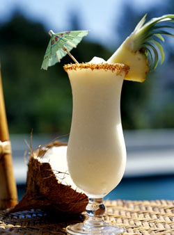

Pina Colada

This is what you need to make a piña colada:
Piña colada is a refresing drink with the taste of coconut, pinaple and rum
Perfect for sunny days
Ingredients
- 6 ounces white rum.
- 6 ounces cream of coconut (preferably Coco Lopez brand)
- 6 ounces pineapple juice.
- 1/2 cup frozen pineapple chunks (see How to Cut a Pineapple)
- 4 cups ice.
- 4 ounces golden or añejo rum.
- Pineapple leaves or wedges for garnish, optional.
How to make a good'ol colada
- Place the white rum, coconut cream, pineapple juice and chunks, and ice in a blender. Process until totally blended.
- Pour into glasses and top with and top with the golden rum (it should float on top).
- Serve with pineapple leaves or slices as garnish if desired.